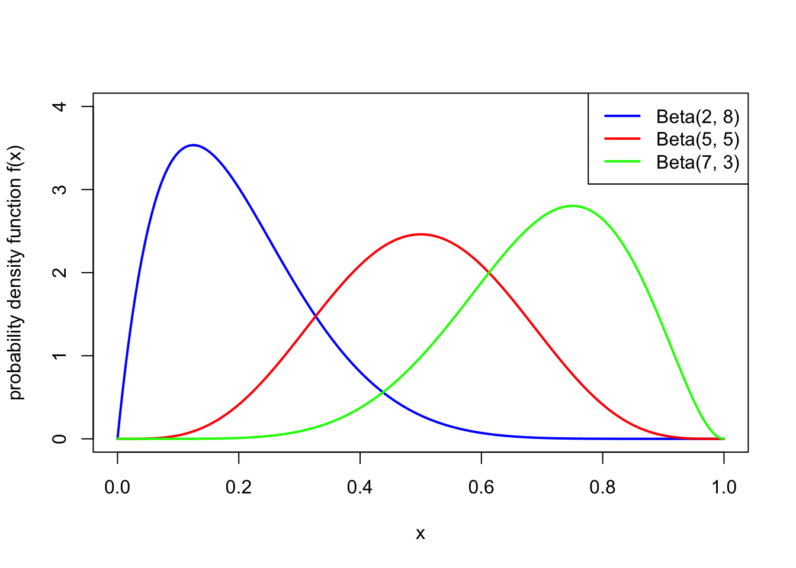
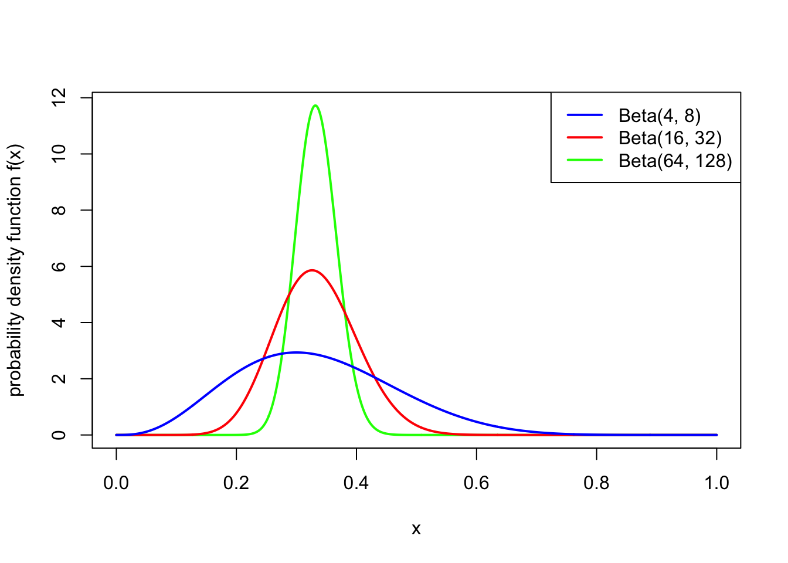

Section 10 Introduction to Bayesian statistics
10.1 Example: fake coin?
Statistics concerns how to draw conclusions from data; and Bayesian statistics is one particular framework for doing this. The idea of Bayesian statistics is that we use the data (together with Bayes’ theorem) to update our “prior” (“before”) beliefs about the underlying model to our “posterior” (“after”) beliefs about the model given the data we have observed.
We will start by illustrating the main idea with an example.
Example 10.1 A joke shop sells three types of coins: normal fair coins; Heads-biased coins, which land Heads with probability 0.8; and Tails-biased coins, which land Heads with probability 0.2. I pick up a coin and examine it; since it looks mostly like a normal coin, I believe there’s 60% chance it’s s fair coin, and a 20% chance it’s biased either way. I decide to toss the coin four times, to gather some more evidence. The result is: Heads, Heads, Tails, Heads. How should I update my beliefs?
We know how to do this: we use Bayes’ theorem. We have \[\begin{align*} \mathbb P(\text{fair} \mid \text{HHTH}) &= \frac{\mathbb P(\text{fair})\, \mathbb P(\text{HHTH}\mid \text{fair})}{\mathbb P(\text{HHTH})} = \frac{0.6 \times 0.5^3 \times 0.5}{\mathbb P(\text{HHTH})} = \frac{0.0375}{\mathbb P(\text{HHTH})} \\ \mathbb P(\text{H-bias} \mid \text{HHTH}) &= \frac{\mathbb P(\text{H-bias})\, \mathbb P(\text{HHTH}\mid \text{H-bias})}{\mathbb P(\text{HHTH})} = \frac{0.2 \times 0.8^3 \times 0.2}{\mathbb P(\text{HHTH})} = \frac{0.02048}{\mathbb P(\text{HHTH})} \\ \mathbb P(\text{T-bias} \mid \text{HHTH}) &= \frac{\mathbb P(\text{H-bias})\, \mathbb P(\text{HHTH}\mid \text{T-bias})}{\mathbb P(\text{HHTH})} = \frac{0.2 \times 0.2^3 \times 0.8}{\mathbb P(\text{HHTH})} = \frac{0.00128}{\mathbb P(\text{HHTH})} . \end{align*}\] We also need to find \(\mathbb P(\text{HHTH})\). We could do that using the law of total probability. But a convenient short-cut is to notice that the above three probabilities have to add up to 1, and so that common denominator must be \(0.0375 + 0.02048 + 0.00128 = 0.05926\).
So, after tossing the coin four times, our belief has been updated from the “prior” (before) belief \[ \mathbb P(\text{fair}) = 0.6 \qquad \mathbb P(\text{H-bias}) = 0.2 \qquad \mathbb P(\text{T-bias}) = 0.2 \] to the “posterior” (after) belief \[ \mathbb P(\text{fair} \mid \text{data}) = 0.633 \qquad \mathbb P(\text{H-bias}\mid \text{data}) = 0.346 \qquad \mathbb P(\text{T-bias}\mid \text{data}) = 0.026 . \]
10.2 Bayesian framework
Let’s think more systematically about what we did in the previous example.
- Model: The four coin tosses were modelled as four IID Bernoulli trials \(X_1, X_2, X_3, X_4 \sim \text{Bern}(\theta)\) (if we let \(X_i = 1\) denote that the \(i\)th coin was Heads). Here, the probability of Heads is some unknown parameter \(\theta\). (Recall we talked about parametric models for data in Subsection 6.5.) This model gives a distribution that depends on the parameter: here we had a conditional PMF for one trial \[ p(x \mid \theta) = \theta^{x} (1 - \theta)^{1- x} \] (this is a convenient way of writing the PMF for a Bernoulli trial), and the joint PMF for the IID trials \[ p(\mathbf x \mid \theta) = \prod_{i=1}^4 \theta^{x_i} (1 - \theta)^{1- x_i} = \theta^{x_1 + x_2 + x_3 + x_4} (1 - \theta)^{4- (x_1 + x_2 + x_3 + x_4)} . \]
- Prior: We started with a prior belief \(\pi(\theta)\) on the value of the unknown parameter. In our case, we had the PMF \[ \pi(0.2) = 0.2 \qquad \pi(0.5) = 0.6 \qquad \pi(0.8) = 0.2 . \]
- Data: We collected the data \(\mathbf x\), which here had \(x_1 = 1\), \(x_2 = 1\), \(x_3 = 0\), \(x_4 = 1\) (with 1 denoting Heads and 0 denoting Tails).
- Posterior: We calculated the posterior distribution \(\pi(\theta \mid \mathbf x)\) for the parameter given the data. We did this using Bayes’ theorem: \[ \pi(\theta \mid \mathbf x) = \frac{\pi(\theta) \, p(\mathbf x \mid \theta)}{p(\mathbf x)} \propto \pi(\theta) \, p(\mathbf x \mid \theta) .\] We recovered the constant of proportionality – that is, the denominator of Bayes’ theorem – because we knew \(\pi(\theta \mid \mathbf x)\) was a conditional PMF so must add up to 1. We ended up with \[ \pi(0.2 \mid \mathbf x) = 0.026 \qquad \pi(0.5 \mid \mathbf x) = 0.633 \qquad \pi(0.8 \mid \mathbf x) = 0.346 . \]
This is the framework of how Bayesian statistics works: model, prior, data, posterior. To lay it out more generally, the procedure goes like this:
- Model: We start with a model for the data \(\mathbf x\) that depends on one or more parameters \(\theta\), as expressed by a conditional PMF (for discrete data) or PDF (for continuous data) \(p(\mathbf x \mid \theta)\). This normally represents \(n\) IID experiments, so \[ p(\mathbf x \mid \theta) = \prod_{i=1}^n p(x_i \mid \theta) . \] This conditional distribution is often called the likelihood.
- Prior: We have a prior distribution \(\pi(\theta)\) for the parameter \(\theta\), which can be either a PMF or PDF. The prior distribution represents our beliefs about the parameter before we collect the data; this can be based on previous evidence, expert opinion, personal intuition, etc.
- Data: We collect the data \(\mathbf x\).
- Posterior: We then form the posterior distribution \(\pi(\theta \mid \mathbf x)\) for the parameter given the data, using Bayes’ theorem: \[\begin{align*} \pi(\theta \mid \mathbf x) &\propto \pi(\theta)\, p(\mathbf x \mid \theta) \\ \text{posterior} &\propto \text{prior} \times \text{likelihood} . \end{align*}\] This can either be a conditional PMF or PDF, but will be the same type as the prior \(\pi(\theta)\).
10.3 Beta distribution
In our fake-coin example, we had a prior PMF for the parameter \(\theta = p\) that could take only 3 possible value. But when doing Bayesian statistics with a parameter that represents a probability, it makes more sense to have a prior PDF that covers the whole interval \([0,1]\). After all, any parameter value that is given a probability of 0 in the prior always has a probability 0 in the posterior as well, no matter how strong the evidence in its favour; it’s considered good practice to only put 0 prior probability on parameter values that are literally impossible, such as probabilities below 0 or above 1. (This is sometimes called “Cromwell’s rule”.)
One useful family of distributions to use as a prior distribution for a probability parameter is the Beta distribution, whose range is the whole interval \([0,1]\).
Definition 10.1 A continuous random variable \(X\) is said to have the Beta distribution with parameters \(\alpha\) and \(\beta\) if it has the PDF \[ f(x) = \frac{1}{B(\alpha, \beta)} x^{\alpha-1} (1-x)^{\beta - 1} \qquad \text{for $0 \leq x \leq 1$} \] and 0 otherwise. Here, the constant \[ B(\alpha, \beta) = \int_0^1 x^{\alpha-1} (1-x)^{\beta - 1} \, \mathrm dx , \] known as the “Beta function”, ensures that the PDF integrates to 1. We write \(X \sim \text{Beta}(\alpha, \beta)\).
Theorem 10.1 Let \(X \sim \text{Beta}(\alpha,\beta)\). Then
- \(\mathbb EX = \displaystyle\frac{\alpha}{\alpha + \beta}\)
- \(\operatorname{Var}(X) = \displaystyle\frac{\alpha\beta}{(\alpha+\beta)^2(\alpha+\beta+1)} = \displaystyle\frac{\mu(1-\mu)}{\alpha+\beta + 1}\), where \(\mu = \mathbb EX\).
(Proving this requires some awkward messing around with Gamma functions, which we won’t bother with here.)
So the idea is that the expectation of \(X\) is decided on by the relative values of \(\alpha\) and \(\beta\), while the variance is decided by the total value of \(\alpha\) and \(\beta\). The following two pictures illustrate this:


Note also that \(\text{Beta}(1,1)\) is the continuous uniform distribution from Example 8.1.
Example 10.2 A statistician is studying the probability \(\theta\) that ordinary coins land Heads. She would like to use a prior distribution for \(\theta\) with prior expectation \(0.5\) and prior standard deviation \(0.01\). What Beta distribution would be appropriate to use?
To get \(\mathbb E\theta = 0.5\), we need \(\alpha = \beta\). Then the variance, which needs to be \(0.01^2 = 0.0001\), is \[ \operatorname{Var}(\theta) = \frac{\mu(1-\mu)}{\alpha+\beta+1} = \frac{0.25}{\alpha + \beta + 1} . \] This requires \(\alpha = \beta = 1250\). (Well, actually \(1249.5\).)
10.4 Beta–Bernoulli model
Consider a Bernoulli likelihood, where \(X_1, X_2, \dots, X_n\) are IID \(\text{Bern}(\theta)\), so have joint PMF \[ p(\mathbf x \mid \theta) = \prod_{i=1}^n \theta^{x_i} (1-\theta)^{1 - x_i} = \theta^{\sum_i x_i} (1 - \theta)^{n-\sum_i x_i} = \theta^y (1 - \theta)^{n-y}, \] where we have written \(y = \sum_i x_i\) for the total number of successes. Consider further using a \(\text{Beta}(\alpha, \beta)\) prior for \(\theta\), so that \[ \pi(\theta) = \frac{1}{B(\alpha, \beta)} \theta^{\alpha-1} (1-\theta)^{\beta - 1} \propto \theta^{\alpha-1} (1-\theta)^{\beta - 1} \] (Because we’re going to use the “posterior has to add up to 1” trick at the end, we’re free to drop constants whenever we want.) This is known as the Beta–Bernoulli model.
Suppose we collect data \(\mathbf x = (x_1, x_2, \dots, x_i)\), with \(y = \sum_i x_i\) successes. What now is the posterior distribution for \(\theta\) given this data?
Using Bayes’ theorem, we have \[\begin{align*} \pi(\mathbf x \mid \theta) &\propto \pi(\theta) p(\mathbf x \mid \theta) \\ &= \theta^{\alpha-1} (1-\theta)^{\beta - 1} \times \theta^y (1 - \theta)^{n-y} \\ &= \theta^{\alpha + y - 1} (1 - \theta)^{\beta + n - y - 1} . \end{align*}\] We can recognise immediately that this is proportional to the PDF for a \(\text{Beta}(\alpha + y, \beta + n - y)\) distribution, so in particular, the constant of proportionality must be \(1/B(\alpha + y, \beta + n - y)\).
So we see that, like the prior, the posterior is also a Beta distribution, where the first parameter has gone from \(\alpha\) to \(\alpha + y\) and the second parameter has gone from \(\beta\) to \(\beta + (n-y)\). In other words, \(\alpha\) has increased by the number of successes, and \(\beta\) has increased by the number of failures. The expectation has gone from the prior expectation \[ \frac{\alpha}{\alpha + \beta} \] to the posterior expectation \[ \frac{\alpha + y}{\alpha + \beta + n} .\] This can be thought of as a sort of average between the prior expectation \(\alpha/(\alpha + \beta)\) and the mean of the data \(y/n\).
10.5 Normal–normal model
Consider a normal likelihood, where \(X_1, X_2, \dots, X_n\) are IID \(\text{N}(\theta, \sigma^2)\), and where the expectation \(\theta\) is the unknown parameter but the variance \(\sigma^2\) is known. So the model has joint PDF \[ p(\mathbf x \mid \theta) \propto \prod_{i=1}^n \exp \left(- \frac{(x_i - \theta)^2}{2\sigma^2}\right) = \exp \left( - \frac{1}{2} \sum_{i=1}^n \frac{(x_i - \theta)^2}{\sigma^2} \right) . \] (Again, we only worry about distributions up to proportionality, because we work out the multiplicative constant at the end.) In fact, when doing Bayesian statistics, it’s often convenient to write \(\tau = 1/\sigma^2\) for the inverse of the known variance; this \(\tau\) is called the precision and is also known. So with this notation, the model is \[ p(\mathbf x \mid \theta) \propto \exp \left( - \frac{1}{2} \sum_{i=1}^n \tau(x_i - \theta)^2 \right) . \]
Consider further using a normal \(\text{N}(\mu_0, 1/\tau_0)\) prior for the unknown expectation parameter \(\theta\). So the prior PDF is \[ \pi(\theta) \propto \exp \left( - \tfrac{1}{2} \tau_0(\theta - \mu_0)^2 \right) \] This is known as the normal–normal model.
Suppose we collect data \(\mathbf x = (x_1, x_2, \dots, x_n)\), and recall that we write \(\bar x = (\sum_i x_i)/n\) for the sample mean.
To get the posterior distribution requires a bit of an algebra slog (see below), but the outcome is that the posterior distribution is \[ \theta \mid \mathbf x \sim \mathrm{N} \left( \frac{\tau_0}{\tau_0 + n\tau} \mu_0 + \frac{n\tau}{\tau_0 + n\tau} \bar x, \frac{1}{\tau_0 + n\tau} \right) . \] In other words, the posterior expectation is a weighted average of the prior expectation \(\mu_0\) and the mean of the data \(\bar x\), and the more datapoints \(n\) you get, the heavier the weighting on the data compared to the prior. Further, the precision has increased from the prior precision \(\tau_0\) to the posterior precision \(\tau_0 + n\tau\); so the more data we get, the larger the precision gets, so the smaller the variance gets, and the more sure we get about the true value of \(\theta\).
The Algebra Slog. Before even getting to Bayes, let’s remind ourselves from Problem Sheet 4 Question B5 that \[ \sum_{i=1}^n \tau(x_i - \theta)^2 = \sum_{i=1}^n \tau(x_i - \bar x)^2 + n\tau(\theta - \bar x)^2 . \] Recalling that we can ignore multiplicative terms that don’t contain \(\theta\), thanks to our proportionality trick, and note also that a multiplicative term becomes an additive term inside an exponential. So we can always ignore any “plus constants” that don’t involve \(\theta\) that are inside an exponential. Thus we get \[\begin{align*} \exp \left( - \frac{1}{2} \sum_{i=1}^n \tau (x_i - \theta)^2 \right) &= \exp \left( - \frac{1}{2} \sum_{i=1}^n \tau(x_i - \bar x)^2 - n\tau(\theta - \bar x)^2 \right)\\ &\propto \exp \left( -\tfrac{1}{2} n\tau(\theta - \bar x)^2 \right) \\ &= \exp \left( -\tfrac{1}{2} (n\tau\theta^2 - 2n\tau\bar x\theta + n\tau \bar{x}^2 ) \right) \\ &\propto \exp \left( -\tfrac{1}{2} (n\tau\theta^2 - 2n\tau\bar x\theta) \right). \end{align*}\]
Now we can invoke Bayes’ theorem, and continue to ignore “plus constants”, to get \[\begin{align*} \pi(\mathbf x \mid \theta) &\propto \exp \left( -\tfrac{1}{2} (n\tau\theta^2 - 2n\tau\bar x\theta + \tau_0(\theta - \mu_0)^2 ) \right) \\ &=\exp \left( - \tfrac{1}{2} (n\tau\theta^2 - 2n\tau\bar x\theta + \tau_0\theta^2 - 2\tau_0\mu_0\theta + \tau_0 \mu_0^2 )\right) \\ &\propto \exp \left( - \tfrac{1}{2} \big( (\tau_0 + n\tau)\theta^2 - 2 (\tau_0 \mu_0 +n\tau \bar x )\theta \big)\right) \\ &= \exp \left( - \tfrac{1}{2}(\tau_0 + n\tau) \left( \theta^2 - 2 \frac{\tau_0 \mu_0 +n\tau \bar x }{\tau_0 + n\tau} \theta \right)\right) \\ &\propto \exp \left( - \tfrac{1}{2}(\tau_0 + n\tau) \left( \theta - \frac{\tau_0 \mu_0 +n\tau \bar x }{\tau_0 + n\tau} \right)^{\!2} \right) . \end{align*}\] This is (proportional to) the PDF for a normal distribution with expectation \[ \frac{\tau_0 \mu_0 +n\tau \bar x }{\tau_0 + n\tau} \] and precision \(\tau_0 + n\tau\).
10.6 Modern Bayesian statistics
In this section, we’ve given just a brief taster of Bayesian statistics. Bayesian statistics is a deep and complicated subject, and you may have the opportunity to find out a lot more about it later in your university career.
We have seen that in Bayesian statistics, one brings in a subjective “prior” based on previous beliefs and evidence, then updates this prior based on the data. This contrasts with the more traditional frequentist statistics. In frequentist one only uses the data – no prior beliefs! – and judges to what extent the data is consistent or inconsistent with a hypothesis. (Frequentist statistics is the main subject studied in MATH1712 Probability and Statistics II.)
In the two main examples of Bayesian statistics we have looked at – the Bernoulli likelihood and the normal likelihood – we ended up with a posterior in the same parametric family as prior, just with different parameters. Such a prior is called a “conjugate prior”. Of course, these are very convenient and easy to work with. However, with more complicated likelihoods and more complicated priors – especially those not with a single parameter but with many parameters – calculating the posterior distribution can be very difficult. In particular, working out the constant of proportionality (even just approximately) and/or sampling from the posterior distribution are very hard problems.
For this reason, Bayesian statistics was for a long time a minor area of statistics. However, increase in computer power in the 1980s made some of these problems more tractable, and Bayesian statistics has increased in importance and popularity since then.
For a while, there was an occasionally fierce debate between “Bayesians” and “frequentists”. Frequentists thought that bringing subjective personal beliefs into things was unmathematical, while Bayesians thought that ignoring how plausible a hypothesis is before testing it is unscientific. The debate has now largely dissipated, and it is accepted that modern statisticians need to know about both frequentist and Bayesian methods.
There are still plenty of open problems in Bayesian statistics, and lots of these involve the computational side: finding algorithms that can efficiently calculate the normalising constants in posterior distributions or sample from those posterior distributions, especially when the parameter(s) have very high dimension.
Summary
- In Bayesian statistics, we start with a prior distribution for a parameter \(\theta\), and update to a posterior distribution given the data \(\mathbf x\), through \(\pi(\theta \mid \mathbf x) \propto \pi(\theta)p(\mathbf x \mid \theta)\), or \(\text{posterior} \propto \text{prior} \times \text{likelihood}\).
- The Beta distribution is a useful family of distributions to use as priors for probability parameters.
- A Beta prior for a Bernoulli likelihood leads to a Beta posterior with different parameters.
- A normal prior for the expectation of a normal likelihood wioth known variance leads to a normal posterior with different parameters.